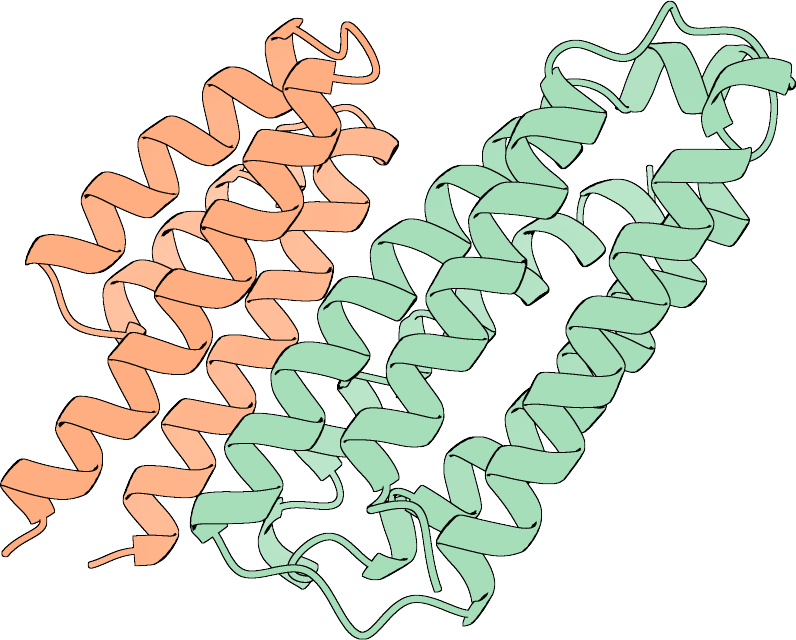
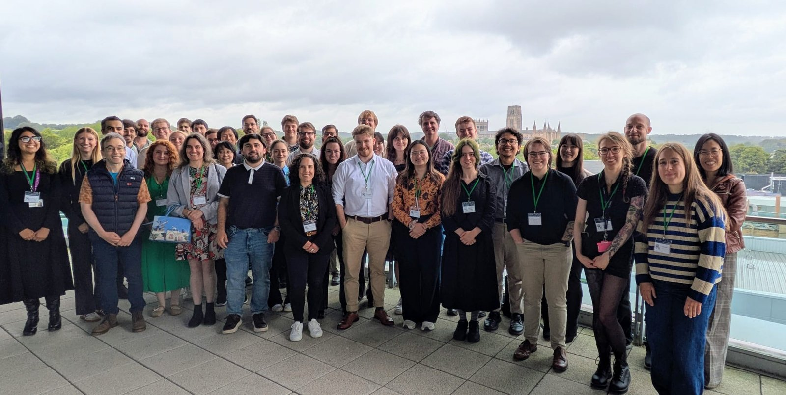
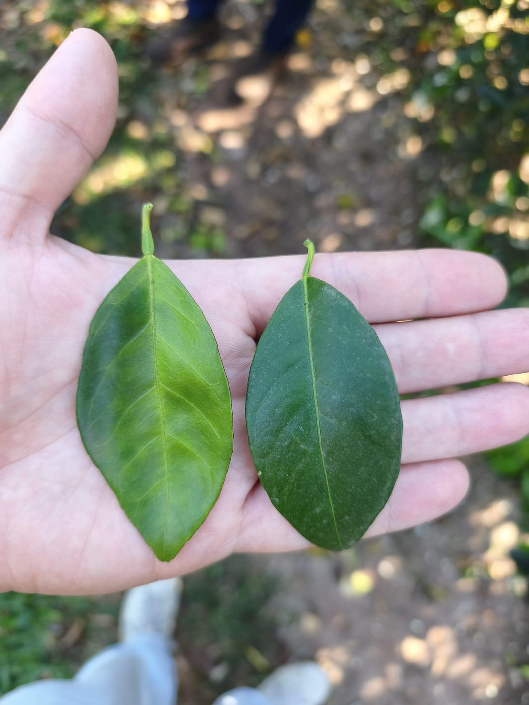
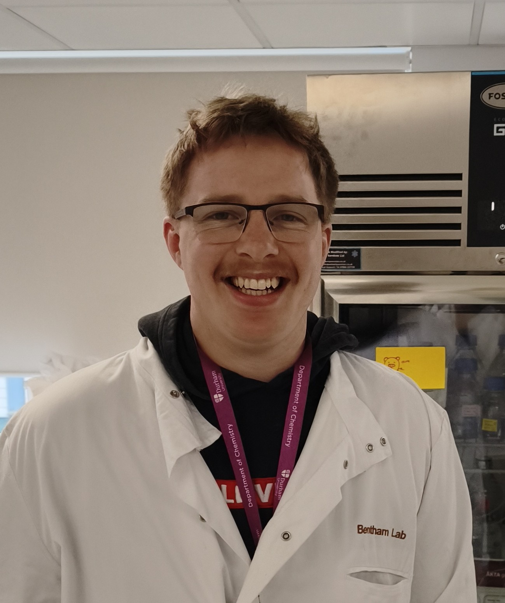

We work out how pathogens interact with their hosts, then design proteins that intervene.

The lab combines structural biology and de novo protein design to study host-pathogen interactions, currently focused on plant immune receptors and targets in neglected tropical disease.
Recent moments

BIONANO 2026
2 Sep 2026Delegates at BIONANO 2026, the sixth biennial meeting on artificial biological nanomachines, hosted by the Centre for Programmable Biological Matter in Durham.
Conference details →
+3Visit to Fundecitrus
10 Aug 2026Visited Fundecitrus in Araraquara, Brazil with Elaine Fitches — a chance to see one of the world's leading citrus disease research programmes up close.
fundecitrus.com.br →New preprint online!
10 Jul 2026Computational design of de novo integrated domains enables rational control of pathogen effector recognition in plant NLR immune receptors.
Read the preprint →
Congratulations, Greg!
29 Apr 2026Best Poster at the Durham Biosciences Awayday.
Rank Prize New Lecturer Award
6 Jan 2026Awarded to Adam Bentham. Funding a new approach to crop protection: AI-designed immune receptors that adapt as pathogens evolve.
Read more →Latest updates
Preprint: de novo integrated domains for plant NLR immune receptors
Xi, Bucknell, Watson et al. describe de novo designed binders integrated into the Pikm-1 NLR chassis against the pathogen effector FoSSP17, with crystal structures confirming side-chain accuracy. The work shows binding and signal relay can be separable properties of an integrated domain.
Read more on the Publications page →Focused Review published in The Plant Journal
With Gregory Knight and Jonathan Heddle, on SUSS effector families and surface frustration as a route to broad-spectrum resistance.
doi.org/10.1111/tpj.70971 →Bentham Lab opens at Durham University
Adam Bentham joins the Department of Biosciences as Assistant Professor and Co-Director of the Centre for Programmable Biological Matter.